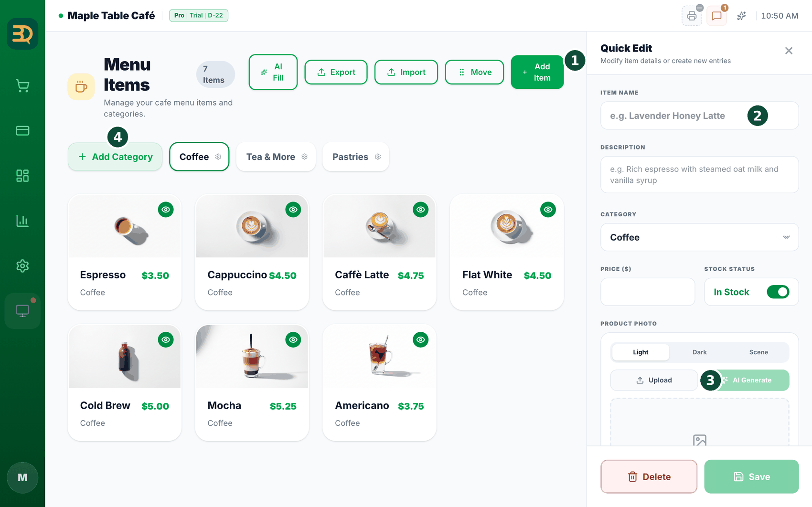
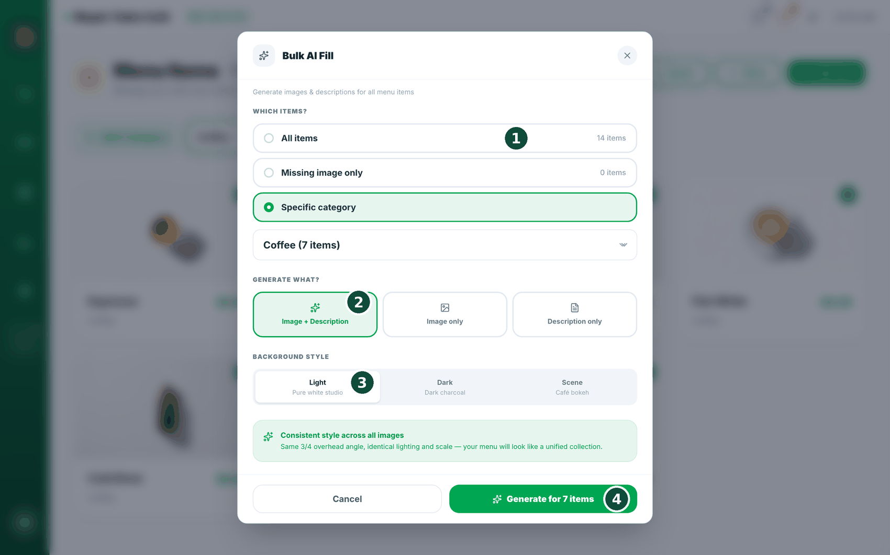

4메뉴 만들기
메뉴는 판매하는 상품의 목록으로, 주문 화면을 구성합니다. 상품을 추가하고 그룹으로 정리해 보겠습니다.
카테고리 · 상품
- 왼쪽 사이드바의 Manage(관리) › Menu Items(메뉴 항목)를 탭합니다. 오른쪽 위에 "AI Fill", "Export", "Import", "Move", "Add Item" 버튼이 있고, 카테고리 탭 줄의 맨 왼쪽에 "Add Category" 버튼이 있습니다.
- 먼저 카테고리를 만듭니다. "Add Category"를 탭하고 "Coffee" 같은 이름을 입력해 저장합니다. (카테고리가 하나는 있어야 "Add Item"이 작동합니다.)
- "Add Item"을 탭합니다. 옆에 패널이 열립니다. 상품 이름, 설명(선택), 카테고리, 가격, 재고 상태("In Stock" 토글)를 입력합니다.
- 사진을 추가합니다. "Upload"로 본인의 사진을 사용하거나, "AI Generate"로 생성합니다.
- "Save"를 탭합니다. 상품이 해당 카테고리에 표시됩니다.
카테고리란 무엇인가요? 폴더와 같은 그룹입니다. 메뉴를 깔끔하게 정리해 상품을 쉽게 찾을 수 있게 합니다.

옵션 그룹 · 프리셋
- 선택지를 제공하려면 상품 패널에서 옵션 그룹(우유나 사이즈 같은)을 연결합니다. "Add Group"으로 그룹을 만들고, 타입(Single / Multi / Quantity)을 선택한 뒤 가격과 함께 선택지를 추가합니다.
미리 만들어진 옵션 그룹. 그룹을 처음부터 만들기 번거롭다면 상품 패널에서 "프리셋에서 추가(Add from Presets)"를 탭합니다. 프리셋 라이브러리(Preset Library)가 열리며, 카페용 우유(Milk)·사이즈(Size)·온도(Temperature)·당도(Sweetness), 식당용 맵기(Spice)·단백질(Protein)·사이드(Sides) 같은 완성형 그룹이 있습니다. 카드를 탭하면 그룹 전체가 메뉴에 추가되고, 추가되면 "추가됨(Added)" 배지가 표시됩니다.
AI 사진 · AI Fill
- 더 보기 좋은 사진이 필요하다면 상품 패널에서 배경 스타일(Light / Dark / Scene)을 선택한 뒤 "AI Generate"를 탭합니다. 사진 3장이 생성되며, 마음에 드는 사진을 탭해 주세요.
"AI Fill"로 메뉴 전체를 한 번에. "AI Fill"을 탭하고, 대상 상품(All items / Missing image only / Specific category)을 선택하고, 생성할 항목(Image + Description / Image only / Description only)을 선택하고, 배경 스타일(Light — Pure white studio / Dark — Dark charcoal / Scene — Café bokeh)을 선택한 뒤 "Generate for N items"(N개 항목 생성)를 탭합니다. 결과를 확인하고 "Apply"(적용)해 주세요.

자랑할 만한 점
AI가 메뉴 전체를 작성하고, 상품 사진까지 생성합니다. 빈 화면이 아니라, 몇 초 만에 가득 찬 메뉴로 시작할 수 있습니다.
가져오기 · 내보내기
- 이미 엑셀에 메뉴가 있다면 "Import"를 탭해 한 번에 가져옵니다. "Export"를 탭하면 메뉴를 엑셀로 내려받습니다.